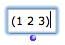
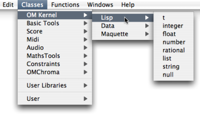
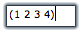
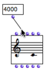
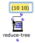

OpenMusic DocumentationHiérarchie de section : OM 6.6 User Manual > Visual Programming I > Boxes > Data Boxes
OpenMusic DocumentationHiérarchie de section : OM 6.6 User Manual > Visual Programming I > Boxes > Data Boxes
Navigation : page précédente | page suivante
Attention, votre navigateur ne supporte pas le javascript ou celui-ci à été désactivé. Certaines fonctionnalités de ce guide sont restreintes.
Data Boxes
Data boxes are the simplest of all OM boxes. A data box represents a constant value. This value belongs to one of the primitive Lisp types, which are available in the OM Kernel / Lisp package.
Use

|
A data box is designed to pass data to other boxes in a patch. It is made of a text field that expresses a value or a text, and an output that allows to connect this content to other boxes. |
Primitive Lisp Types
There are several primitive Lisp types :
|
any type of numeric data |
|
a list of any type of item between parenthesis |
|
an integer number |
|
a text between double quotes – inverted commas – |
|
decimal number |
|
the Lisp expression for "true" |
|
a/b |
|
the Lisp expression of "false" or "nothing" |
Adding a Data Box
Typing Directly In the Patch Editor
|  | Cmd click in the patch editor and type a content – for instance 4, (2 3 4), "hello", etc. – directly in the text prompt. |
Menus Or Library Window

- Go to
Classes / Kernel / Lispand choose a menu item. -
Ctrl/ right click in the patch editor and choose a menu item in the contextual menu. - Pick the box in the relevant package from the Library window and drop it in the editor.
Note
A data box accepts any primitive type, no matter what its type was initially.
Editing the Content of a Box
|  | Double click on a box to edit its content. |
- Numbers should be entered as simple numbers.
- Strings should be entered between double quotes – inverted commas.
- Symbols should be entered as simple text.
- Lists should be entered between parenthesis, just as in Lisp. Ill-formed lists are not accepted.
**** To confirm the input value, press Enter or click in the patch editor. **** No line return is allowed in data boxes. ****
Resizing
To fit the box size to its content, select it and type i.
Connection to Another Box
Click on the outlet to create a connection and drag it to the wanted inlet of another box. |

Connecting a simple value box to the pitch inlet of a "note" box.
|
Automatic Connection

|
To add a connected data box to a factory or function box, |
Références :
Plan :
Navigation : page précédente | page suivante
A propos...(c) Ircam - Centre Pompidou